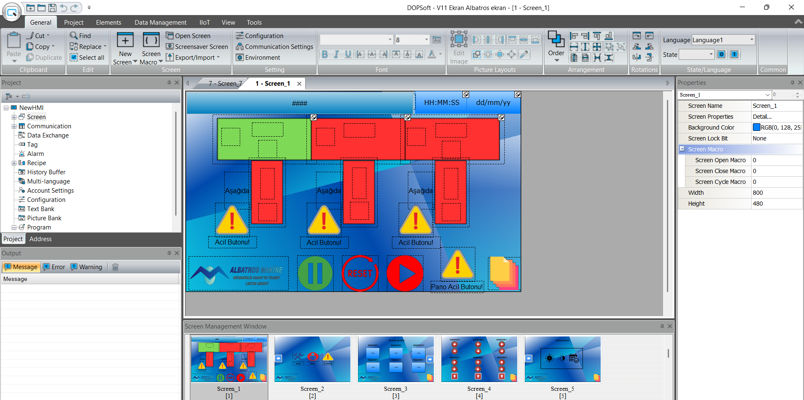

Proje Galerisi



Üç ayrı üretim tesisinde konveyör otomasyon sistemleri kuruldu. 500+ I/O noktası ve 20 AC sürücü için Modbus iletişimi yapılandırıldı; iş gücü verimi iki katına çıkarıldı.
Üç tesiste 500+ I/O noktası ve 20 AC sürücü için kapsamlı Modbus iletişim yapılandırmasıyla taşıyıcı otomasyon sistemi programladım. Modbus RS-485 ile AC sürücü haberleşmesi sağladım. İş gücü verimini iki katına çıkaran otomatik taşıma iş akışı geliştirdim. Siemens PLC ve TIA Portal kullanarak taşıyıcı hareket sekansı ve kontrol mantığı yazdım. HMI arayüzüyle sistem durumu ve performans izleme uyguladım.
Üç tesiste birbirine bağlı taşıyıcı otomasyon sistemi, koordineli iş akışı ve merkezi izleme ile yönetilen kapsamlı sistem.
20 AC sürücü ile güvenilir Modbus RS-485 iletişimi kurularak 500+ I/O noktasında kesintisiz veri alışverişi sağlandı.
El kontrolünün azaltılarak üretim taşıma prosesi otomatikleştirildi, hata yönetimi ve güvenlik kilitleri entegre edildi.
Önceden gösterici bakım ve hata tespiti ile 99.5%+ sistem çalışma oranı sağlandı.

Bu CV'deki tüm projeler Doka Mühendislik'in izniyle paylaşılmıştır. Gizlilik anlaşmalarına saygı göstermek amacıyla tescilli bilgiler, müşteri adları ve hassas teknik ayrıntılar genelleştirilmiştir.